창의사고력 수학
창의적 인재가 미래의 주역임은 우리 모두가 공감하는 부분입니다.
창의사고력 프로그램은 아동들의 호기심과 재미를 유발하여 유연한 사고를 유도하고 잠재된 창의성과 영재성을 발휘할 수 있도록 하기 위해 고안한 프로그램으로, 지능발달과 사고력 발달에 도움을 줍니다
*창의사고력 수학 활동을 통해 우리 아이가 얻을 수 있는 것 *
<<교구게임을 통해>>
공간지각력 : 상하, 좌우, 전후 등의 입체, 공간에 대해 이해하는 능력
암산력 : 필기도구, 계산기, 수판 따위를 이용하지 아니하고 머릿속으로 계산하는 능력. 숫자카드게임 등을 통해 향상
인지능력 : 어떠한 사실을 인정하고 하는 능력
상황판단력 : 어떠한 상황을 인식하여 논리나 기준 등에 따라 판정을 내리는 능력
전략전술 : 전반적으로 이끌어 가는 방법이나 책략, 일정한 목적을 달성하기 위한 수단이나 방법
분석력 : 복잡한 현상이나 개념을 단순한 요소로 분해하여 명료하게 하는 능력
순발력 : 순간적으로 판단하여 말하거나 행동하는 능력
사회성발달 : 2인 이상이 함께 참여, 타인과의 공정한 경쟁, 올바른 대화, 질서를 습득
두뇌발달 :논리적, 전략적 사고방식을 자연스럽게 훈련하며, 직관력 과 통찰력을 발달시켜 좌,우뇌통합 발달을 가져옴
집중력 향상 : 흥미를 바탕으로 한 자발적 참여는 집중력을 향상시키고 집중 시간을 늘려 줌
학습발달 :어휘력, 색 분별력, 수 개념, 계산능력, 정보분석능력 등을 저절로 익히게 됨
도적의식 고취 : 승패를 가려야 하는 게임을 통해 패배를 극복하고 다시 도전할 수 있는 성숙된 사고를 가짐
<<창의사고력 교재를 통해>>
수리력 : 수에 대한 이론과 이치에 대한 그 속에 담겨진 원리를 파악하여 잘 활용하는 능력. 수의 개념과 계산의 이치 등 수를 기초로 하는 논리와 사고를 의미.
문제집착력 : 어떠한 문제를 스스로 끝까지 풀어내는 능력. 요즘은 "자기주도학습"이라고 일컫기도 한다.
* 창의사고력 수학 게임의 종류 *
창의사고력 프로그램(창의두뇌개발)은 국제적으로 공식인증 게임교구(24종)를 활용하여, 따로따로 흩어져 있는 개념들을 하나의 사고로 유추해내고 두뇌개발[창의/사고/수리력]과 집중력, 직관력을 향상시키는 프로그램입니다. 특히나 두뇌활동반응이 빠르고, 매우 흥미로운 교구와 교재로 자연스럽게 자기주도 학습을 유도합니다.
1. 수의 연산과 규칙 교구 – 수학의 개념, 수의 대소, 수 연산, 수의 규칙 학습교구
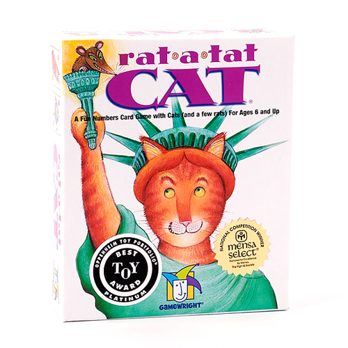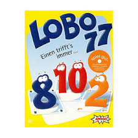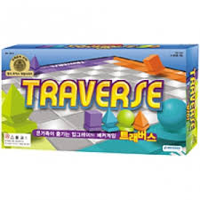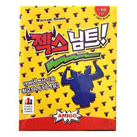
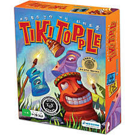
2. 도형/공간의 이해 교구 – 도형(평면과 입체)의 이해, 공간지각, 대칭, 회전 학습교구
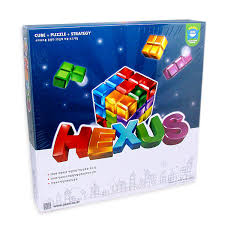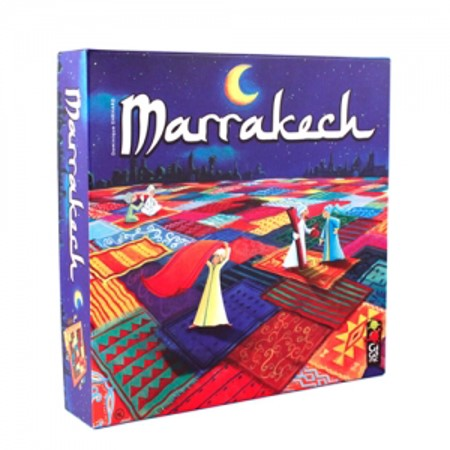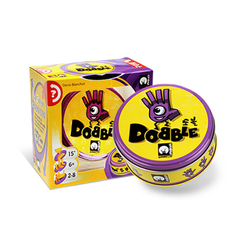
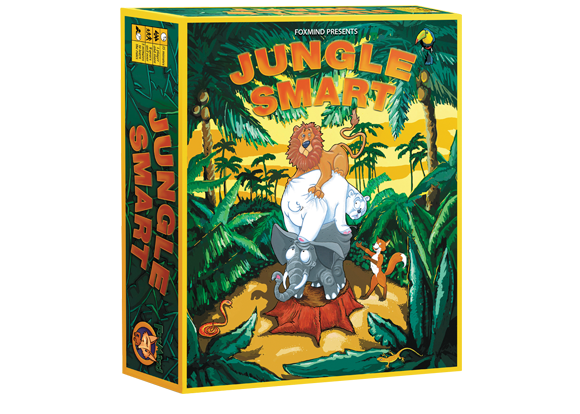
3. 논리, 추론 교구 – 논리적 비교, 추론, 유추와 생각의 전환 학습교구
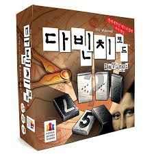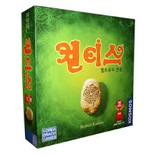
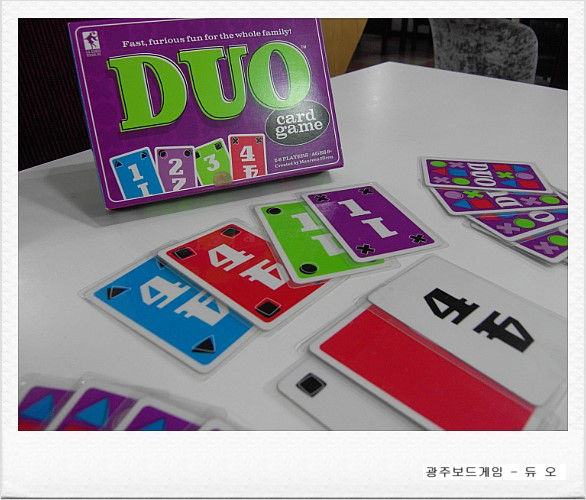
4. 종합판단 교구 – 상황의 이해와 판단, 해결 방법의 선택, 예상과 분석 학습교구
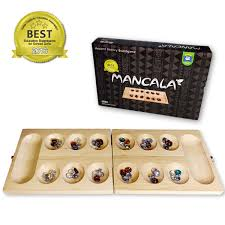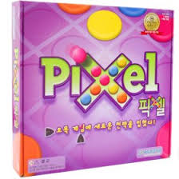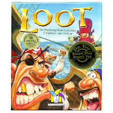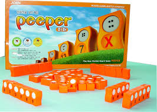
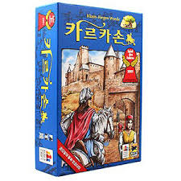